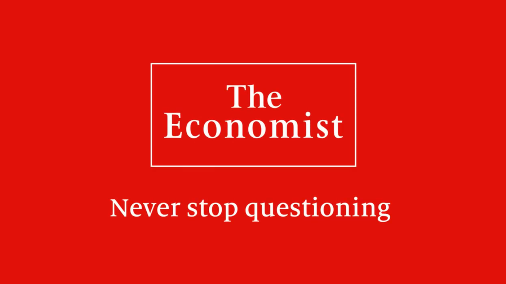

The Economist
이젠 하락이 올까? 150조 현금보유 워런 버핏의 행동에서 배울 점
중국을 주목하라. 쉽게 찾아오는 기회가 아니다
레이달리오, 워렌버핏의 4Q 포트폴리오가 전하는 메시지
개인 투자자의 삼성전자 집중 매수를 보는 전문가의 시각 (f.김학균)
코로나 백신과 5분 진단키트에 다우 3% 반등
중국발 전염병을 정확히 예측한 빌게이츠
금리의 쉬운 이해! '장단기 금리 역전'의 의미는?
사모펀드란 무엇인가 가장 쉽게 설명합니다 제2편 (돈은 누가 벌까?)
사모펀드란 무엇인가 가장 쉽게 설명합니다 제1편 (기본개념과 구조)
낮아진 유가레벨, 미국 셰일기업의 연쇄 부도 가능성 점검! (f.최진영)
美 재정지원 여부에 따른 상승폭의 변화 (f.박제영)
천문학적 돈을 풀어 큰그림을 완성시키겠다는 중국의 계획
삼성전자 매수를 바라보는 반도체 애널리스트의 전망
그들은 어떻게 주가를 조작하는가? (f. 김정수 대표)
[코로나 대책 특별방송] 의사, 과학자들이 보는 코로나 19 과연 언제까지?
1주일 앞으로 다가온 삼성전자 실적 발표, 전세계 IT 주식의 바로미터?_오늘아침page2_이승우, 곽상준
지난 10년간의 주식 법칙이 깨지다?
확진자수 증가에도 상승하는 미국 증시, 다음 상황은?
1년 후를 본다면 지금은 담을 때 (f.김한진)
연준이 곳간을 열었다, 시장은 반응했다 (f.오건영)
누구도 예측 못한 주가하락, 끝은 어디에? (김한진 박사)
급변하는 장세속 반도체 시장의 방향은 f.이주완
유가 폭락으로 셰일가스발 경제대공황이 온다?! 그들이 아픈데 또 때린 이유
레이달리오. 코로나로 인해 투자의 패러다임이 바뀌었음을 선언하다
뉴욕증시에 23년 만에 찾아온 서킷브레이커, 워렌버핏은 어떻게 생각할까?
2020년과 닮은 1974년의 교훈! 레이달리오는 이렇게 말했다
중앙은행 통화정책은 끝?, 현금을 보유하는 이유
외국인, 열흘간 삼성전자 3조6천억 팔아
소상공인 돕는다면서 건물주만 개이득보는 "착한 임대인 운동"
2008년이 금융위기라면 2020년은 경제적 약자의 위기 (김학균)
뉴욕증시 팬데믹 공포에 11-12% 대폭락
기간대비 하락폭 최대, 초유의 상황
부는 어떻게 축적되는가 | 10분 만에 자본주의 이해하기
트럼프와 맞짱뜰 바이든과 샌더스의 실체는?! 이들이 되면 한반도는 어찌될까..??
'양적 완화'란 무엇인가? 우리가 해야할 일은?
150조 굴리는 월가의 전설이 보는 주식시장 대폭락
서킷 브레이커를 또 만난 올웨더. 알려드립니다
미국 연준이 가진 숨겨진 필살기, 양적완화 역대급 정리
워렌버핏도 40조원 손실, 레이달리오의 해법 제시
무역전쟁과 4차산업혁명이 만드는 부의 기회
샤오미 쇼크!! 중국 경제위기의 시작인가?(2019)
워렌 버핏 "주가 예상하지 마라…너는 못한다"
미중 전쟁 가능성 생각보다 가까이 있다?
(1편) 35년 만에 버블이 다가오고 있다
에너지패권에서 밀리자 막장 에너지 정책을 시행하는 중국
Great2020! 다시 도전하는 CJ와 동남아시아 택배 시장에 승부하는 CJ대한통운
선전선동 당하려면 몰라도 되는 정치성향 구분법
잘나가던 중국이 망할 수 밖에 없는 이유
실리콘밸리의 진짜 실력자 '피터틸'이 떼돈을 번 비법
북한이 정말 비핵화를 원하고 경제를 선택할 것인가?
미국이 갑자기 자유무역체제를 거부하려는 진짜 이유
돈 무제한 풀어도 된다는 충격적인 경제이론
경제 흐름을 보는 가장 쉽고 직관적인 방법
레이달리오 템플릿의 3가지 교훈
1. 부채가 소득보다 빠르게 증가하면 안된다.
2. 소득증가가 생산성 증가보다 빠르면 안된다.
3. 가능한 모든 방법으로 생산성을 높여야 한다.
David Tepper
In 2001 he generated a 61% return by focusing on distressed bonds, and in the fourth quarter of 2005 he pursued what he saw as better opportunities in Standard & Poor's 500 stocks.[11] Tepper “keeps the market on edge” [12] and makes significant gains year after year by investing in the “diciest of companies,” such as MCI and Mirant. Investments in Conseco and Marconi also led to huge hedge fund profits for the company.
In a 2010 speech he recommended several supposedly risky investments, including AIG debt, Bank of America equity, and European banks. Citing experts who predicted hyperinflation or depression and deflation, he argued neither would happen: “The point is, markets adapt, people adapt. Don’t listen to all the crap out there.”
In 2009, Tepper's hedge-fund earned about $7 billion by buying distressed financial stocks in February and March (including Bank of America common stock at $3 per share), and then profiting from their recovery that year.[13] A total of $4 billion of those profits went to Tepper's personal wealth, making him the top-earning hedge fund manager of 2009 according to The New York Times.
빅데이터를 창업, 비즈니스에 활용해 돈버는법
"이 세상 주식이 아니다" 폭주하는 테슬라와 패닉에 빠진 공매도
2019년, 엄청난 상승세를 보였으나 차마 손을 뻗지 못했던 주식들
중국이 급속도로 붕괴되고 있다 - 처참하게 파멸중인 중국, 사회주의의 말로
AMD와 인텔의 반백년 전쟁과 2020년 불타오르는 반도체시장
고전하고 있는 우리나라 자전거와 희망
'수요'부족 사회, 성장을 향한 우리의 해법은 있을까?
야심차게 모아온 디즈니의 원기옥, 디즈니 플러스+ 문을 열다
블록체인 기술이 꿈꾸는 미래시장 거래 시스템의 변화
메인사이트의 다변화와 이커머스 시장의 Hot 키워드-컨텐츠, 커뮤니티
한국산 불닭볶음면, 세계 라면계를 강타하다!?
한국 바이오, 그 예측불허한 시장과 우리의 희망
미국 대선레이스 시작! 쟁점이 되는 "자격주의 사회"
한국 남성 근시율 96.5%!? 이만하면 렌즈도 우리나라가 최강 아닙니까?
아찔했던 순간.. 대한민국, 리만 브라더스 인수를 시도하다
잠에서 깨어난 인도 시장, 기회를 포착하고 달려드는 글로벌 맹수들
미중 갈등으로 전략을 수정중인 중국, 급속도로 한국과 닮아간다?
AI, AI, AI 우리가 가야할 길?
중학생도 이해가능한 '주식 투자 지표'와 워런버핏 형의 2대 원칙
페이스북facebook 사상 최대치 떡락..이유는??
18년 구글플레이 상반기 매출순위를 보고 얻은 깨달음
제목만 봐도 귀에 들렸던 국민곡이 사라지고 있다? 파편화되는 음악 시장